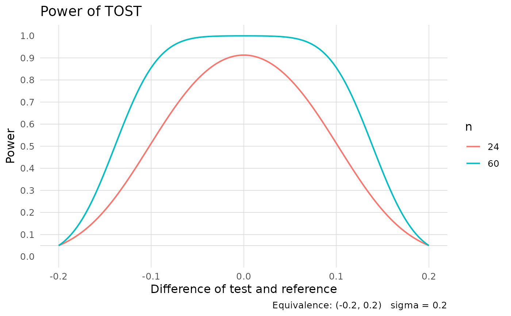

Plot TOST Equivalence-Test Power Curves Over a Range of True Differences
Source:R/power_equivalence_md.R
power_equivalence_md_plot.RdFor each sample size in n, draws power as a function of the true
mean difference (or ratio, on the log scale), evaluated at 201 equally
spaced points across the equivalence interval. Returns a ggplot2
object; the underlying numerical grid is attached as
attr(<plot>, "power_grid").
Usage
power_equivalence_md_plot(
alpha_level,
logscale,
theta1,
theta2,
sigma,
n,
nu,
title = NULL,
subtitle = NULL
)Arguments
- alpha_level
Type I error rate for each of the two one-sided tests.
- logscale
Logical. If
TRUE, the means are compared on the logarithmic scale.- theta1
Lower limit of the equivalence interval.
- theta2
Upper limit of the equivalence interval.
- sigma
\(\sqrt{\mathrm{error\ variance}}\).
- n
Vector of sample sizes (one curve per element).
- nu
Vector of degrees of freedom for
sigma, the same length asn.- title
Optional plot title (default
"Power of TOST").- subtitle
Optional subtitle (typically a reference like
"Phillips, Figure 3").
Value
A ggplot object. The 201-row power grid (column 1: true
difference; remaining columns: power for each n) is attached as
attr(<plot>, "power_grid").
References
Diletti, E., Hauschke, D., & Steinijans, V. W. (1991). Sample size determination of bioequivalence assessment by means of confidence intervals. International Journal of Clinical Pharmacology, Therapy and Toxicology, 29(1), 1–8.
Kelley, K. (2007a). Confidence intervals for standardized effect sizes: Theory, application, and implementation. Journal of Statistical Software, 20(8), 1–24. doi:10.18637/jss.v020.i08
Kelley, K. (2007b). Methods for the behavioral, educational, and social sciences: An R package. Behavior Research Methods, 39(4), 979–984. doi:10.3758/BF03192993
Phillips, K. F. (1990). Power of the two one-sided tests procedure in bioequivalence. Journal of Pharmacokinetics and Biopharmaceutics, 18(2), 139–144. doi:10.1007/BF01063556
Schuirmann, D. J. (1987). A comparison of the two one-sided tests procedure and the power approach for assessing the equivalence of average bioavailability. Journal of Pharmacokinetics and Biopharmaceutics, 15(6), 657–680.
See also
power_equivalence_md,
power_density_equivalence_md
Other equivalence testing:
equivalence_c(),
equivalence_r(),
equivalence_smd(),
plot_equivalence(),
power_density_equivalence_md(),
power_equivalence_c(),
power_equivalence_md(),
ss_power_equivalence_c()
Other plotting:
plot_R2(),
plot_cfa_k(),
plot_ci(),
plot_equivalence(),
plot_forest(),
plot_irt_information(),
plot_mediation_mbco(),
plot_randomization_test(),
plot_regions_of_significance(),
plot_smd(),
plot_trajectories(),
plot_trajectories_fitted()
Author
Ken Kelley kkelley@nd.edu
Examples
# One curve per sample size, showing power against the true mean
# difference. Two of the seven sample sizes behind Phillips (1990)
# Figure 3 are drawn here so the example stays quick; the full
# reproduction is given below.
fig <- power_equivalence_md_plot(
alpha_level = .05, logscale = FALSE,
theta1 = -.2, theta2 = .2, sigma = .20,
n = c(24, 60), nu = c(22, 58)
)
fig

# The numbers behind the curves travel with the figure, so a particular
# power value can be read off rather than eyeballed. The first column is
# the true difference and the remaining columns give power, one column
# per sample size. Power is highest where the true difference is zero.
power_grid <- attr(fig, "power_grid")
power_grid[which.min(abs(power_grid[, 1])), ]
#> diff n=24 n=60
#> 0.0000000 0.9127046 0.9998349
# The two published figures are not run here because every curve
# evaluates the power integral at 201 true differences, so a
# seven-curve figure costs a few tenths of a second. Phillips (1990)
# Figure 3 is:
# n <- c(9, 12, 18, 24, 30, 40, 60)
# nu <- c(7, 10, 16, 22, 28, 38, 58)
# power_equivalence_md_plot(
# alpha_level = .05, logscale = FALSE,
# theta1 = -.2, theta2 = .2, sigma = .20,
# n = n, nu = nu,
# subtitle = "Phillips Figure 3"
# )
# Diletti (1991) Figure 1c is the same idea on the log scale, where the
# equivalence limits are the 0.80 to 1.25 ratio bounds used in
# bioequivalence work:
# n_d <- c(8, 12, 18, 24, 30, 40, 60)
# nu_d <- c(6, 10, 16, 22, 28, 38, 58)
# power_equivalence_md_plot(
# alpha_level = .05, logscale = TRUE,
# theta1 = .8, theta2 = 1.25, sigma = .20,
# n = n_d, nu = nu_d,
# subtitle = "Diletti, Figure 1c"
# )